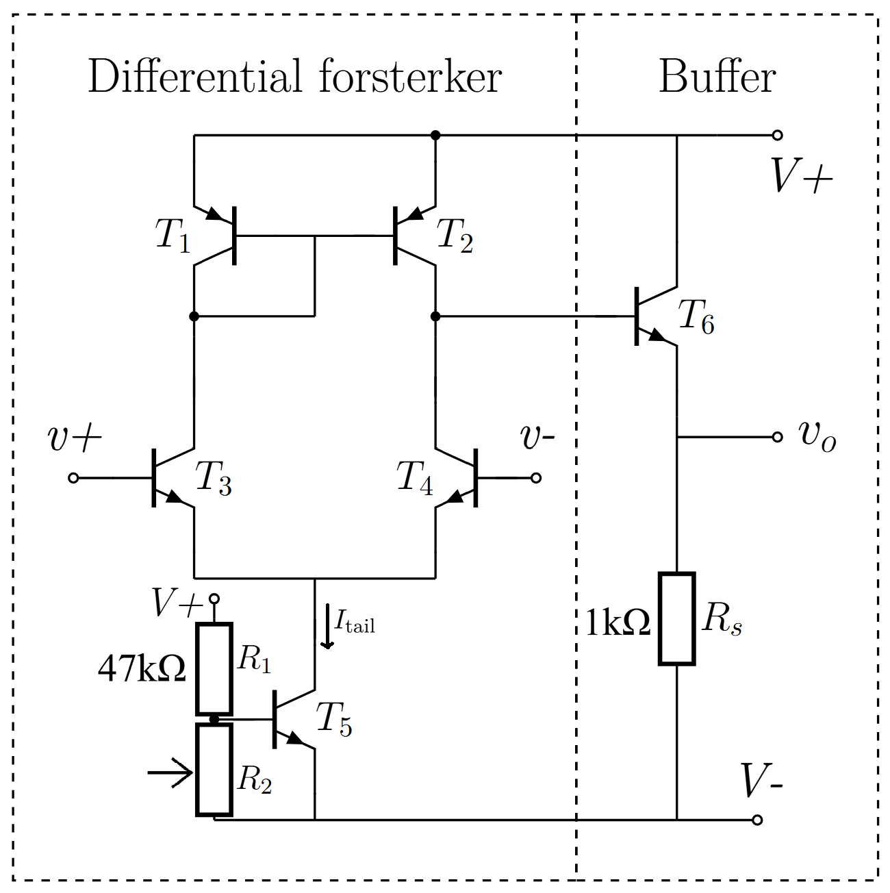
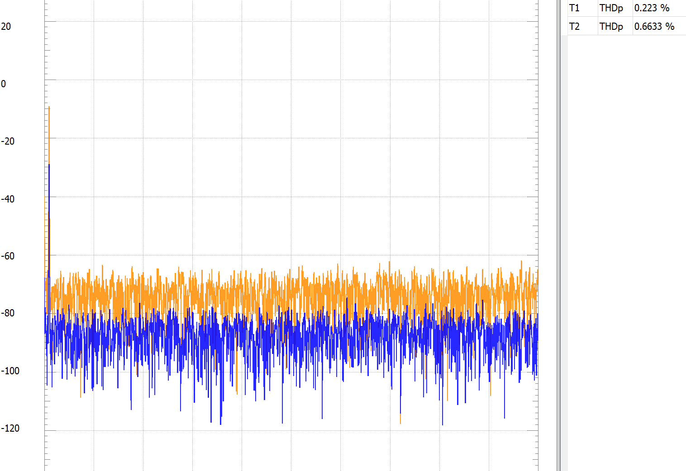

Building an op-amp from transistors
A discrete operational amplifier, built up from a handful of BC547 NPNs and BC557 PNPs on a breadboard, powered at ±5 V, then measured open-loop, closed-loop, and under two different loads. The point was less to use the op-amp than to see it from the inside.

The architecture
- Differential input pair (T3, T4): inputs land on the bases of a PNP pair; the tail-current transistor (T5) sets the bias.
- Current mirror (T1, T2): turns the differential current into a single-ended signal.
- Emitter-follower output (T6): low output impedance so the op-amp can actually drive a load.
- Bias network: R₁/R₂ voltage divider sets the tail transistor's reference. RS = 1 kΩ at the emitter follower limits the output current.
What I measured
1 kHz sine, ±5 V supply, two loads (100 kΩ and 100 Ω), open-loop and with a ×10 inverting feedback network:
| Config | RL | Vin | A | THDout |
|---|---|---|---|---|
| Open loop | 100 kΩ | 1 mV | ~400 | 4.8% |
| Open loop | 100 Ω | 3 mV | ~100 | 1.7% |
| ×10 feedback | 100 Ω | 50 mV | 9.2 | 0.27% |
| ×10 feedback | 100 kΩ | 50 mV | 9.7 | 0.22% |
Open-loop gain crashes by a factor of four when the load drops from 100 kΩ to 100 Ω. The discrete output stage cannot keep up. Closed-loop, with the gain nailed to a target of 10 by the feedback network, both load values land within a few percent of the target and the THD drops by an order of magnitude. Feedback does exactly what the textbook says it does, on real hardware.


What I took away
That seeing closed-loop feedback dominate component variability with your own eyes is more convincing than any number of textbook diagrams. The 9.2 → 9.7 spread between loads, and the 9.2 → 10.7 swing I got when swapping one feedback resistor for a nominally identical part, made the case for negative feedback better than any lecture.